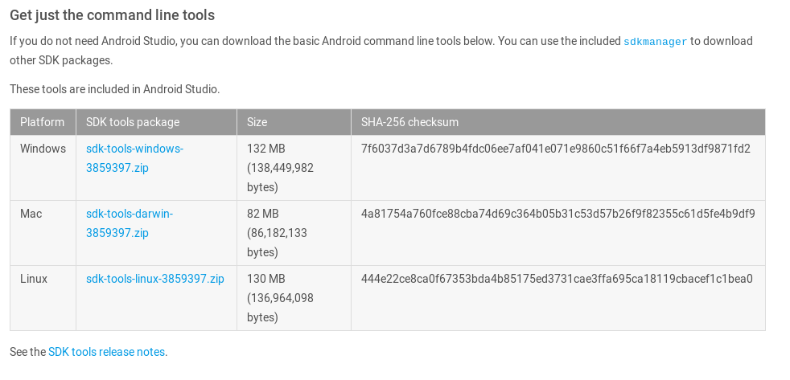
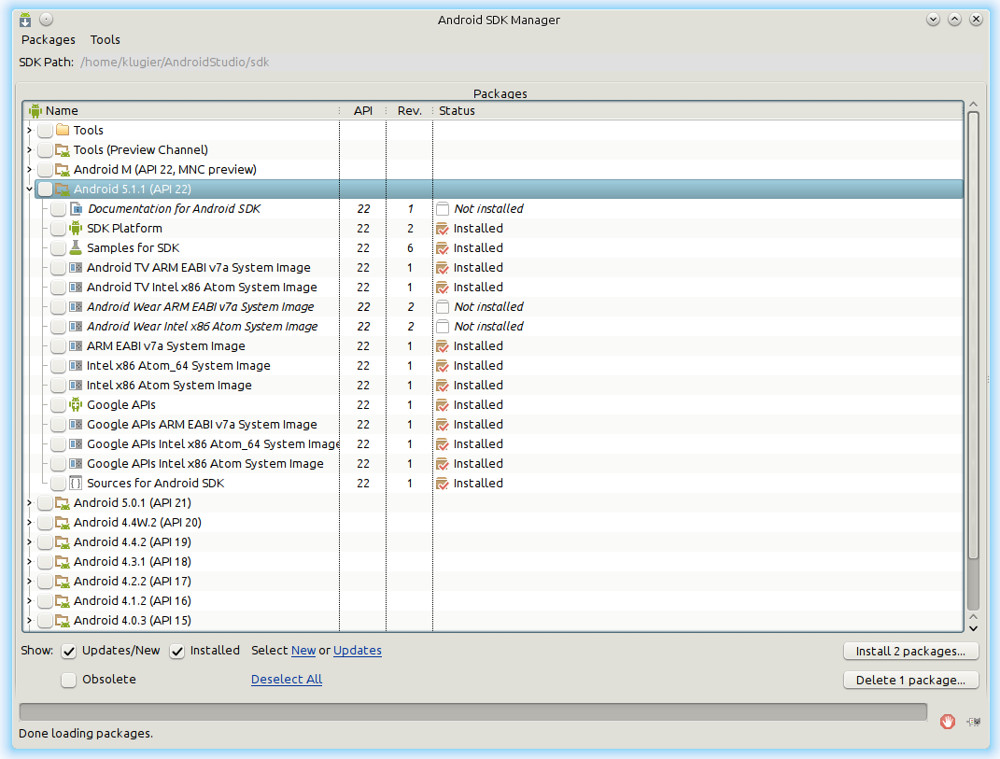
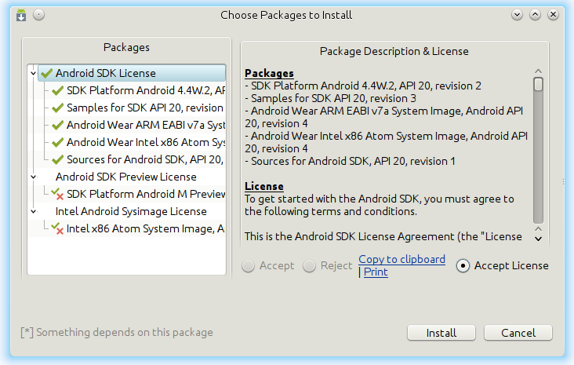
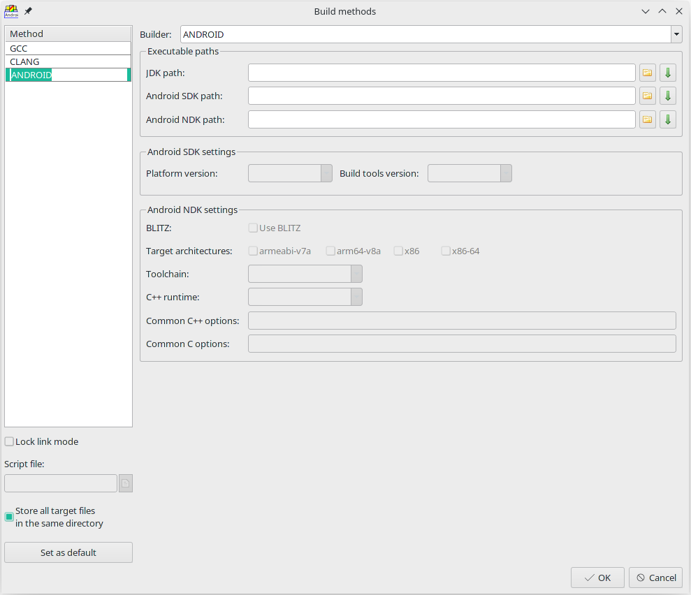
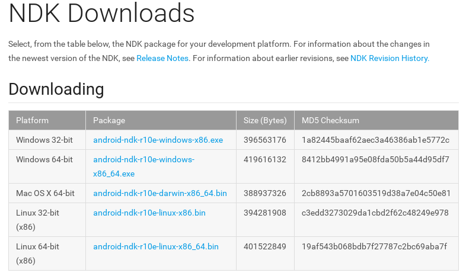
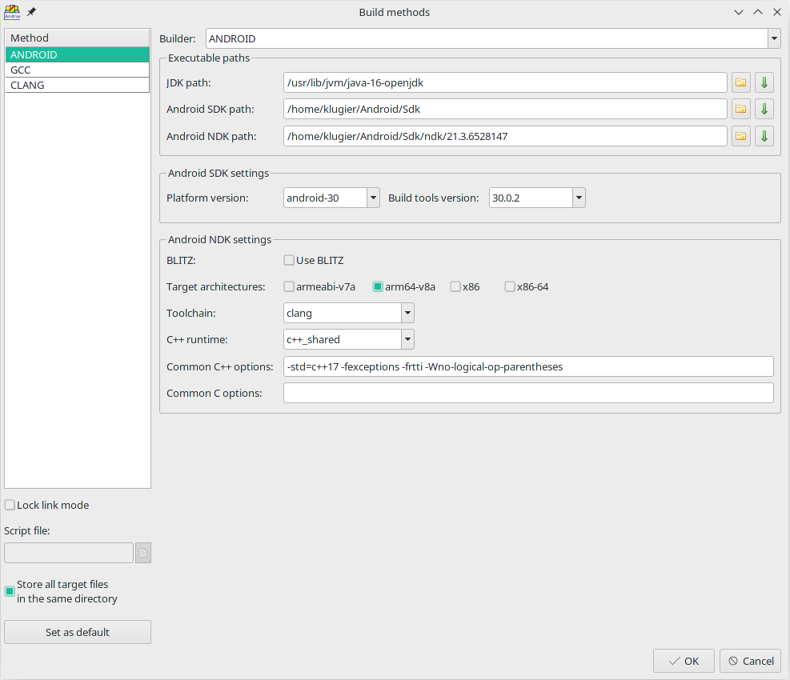

Working with Android builder
Table of contents
1. Introduction
2. Downloading Android SDK
3. Configuring Android SDK
4. Creating Android builder
5. Linking Android builder with Android NDK
6. Configuring Android builder
7. Tips and tricks
8. Known issues
9. Appendix
1. Introduction
Android is lead mobile operating system all over the world. In this reference, we want to show you how you can work with its development tools inside TheIDE.
We will use abbreviations and terms that may be unknown for beginners and new users. Below is the list with the most important ones:
Android SDK - Android software development kit
Android NDK - Android native development kit
JDK - Java development kit
This tutorial is divided into nine chapters. The second and third chapters describe things related to Android SDK. Fourth chapter shows how to create Android builder. Next chapter is devoted to the process of creation Android Builder. Fifth chapter shows how to link Android NDK with Android Builder. After that, all configuration options related to Android Builder will be described. The last chapters refer to things related with this tutorial.
2. Downloading Android SDK
First of all you will need to download Android SDK from the official site. You can do this by clicking on following URL: https://developer.android.com/studio/index.html. On the site, please find paragraph "Get just the command line tools" and select the version suited to your current operating system. If you are interested, you can download the SDK with "Android Studio", but it is not required by TheIDE.

Official Android SDK download site
When you download Android SDK you will need to install it. This operation can be different depending on which platform you are using. Sometimes you need to unpack the archive (Linux), another time you need to launch the installer (MS Windows).
3. Configuring Android SDK
When Android SDK is successfully installed, we need to prepare it for our needs.
One of the essential tool is "Android SDK Manager". It helps managing Android SDK components. The entire tool is simply GUI application. To launch it, go to $(SDK_PATH)/tools/ and launch android (on Linux) or android.exe (on MS Windows)). Alternatively after creating Android builder you receive the ability to launch this application from TheIDE. Make sure you have selected properly constituted build method related to Android Builder, because only this guarantees the availability of this option.

Android SDK Manager
After the first launch of "Android SDK Manager" it automatically detects the most important packages to install. So, we don't need to worry about potential selections. The only thing we should do in this window is pressing the "Install" button. Afterward, on your display should appear a window containing license agreements. To download packages you are obligated to accept them. At the end, we need to press "Install" button once again, but this time it is located in the currently window.

Window with license agreements
After accepting licenses the download process should begin. To finish configuring SDK you must wait for the end of the process. It may take awhile (It mostly depends on your internet download rate).
Attention: If you are Android SDK expert or you know what are you doing you can select packages manually. In this paragraph, we showed the fastest way to the successful configure Android SDK.
4. Creating Android builder
The next big step is creating Android builder inside TheIDE. This operation will allow us to write and build an application on Android. To do this, you will need to open "Build methods" window (TheIDE menu-bar Setup -> Build methods..) and create method. You can do this by moving mouse cursor to methods list and right click on it. Then, menu bar should appear. You need to select "Insert row" entry. We created an empty method with no name. Therefore, you have to name your build method. The name does not matter, but for the purposes of this tutorial we call it "AndroidBuilder". Please notice that method must have a name. Otherwise, we will not be able to close the "Build methods" window. In the next step we are going to choose builder type. You can do this by clicking on "Builder" drop list and selecting "ANDROID" entry.

Build methods window with the newly formed Android builder
After that, we need to set the JDK path. You can do this by choosing a directory inside "JDK path" field. Before you start setting directory, please make sure that you possess appropriate JDK version. The current version of Android SDK supports Java 8 and we recommended this version. However, you could use latest version as well and Android Builder should handle it by downgrading version on compilation level. If you don't have JDK or you have a version that doesn't meet the requirements, you can download it from one of the distributors: https://www.azul.com/downloads/?version=java-8-lts&package=jdk.
To finish creating Android builder process, we need to set the Android SDK path. The field used for its settings "Android SDK Path". Before you setup path, make sure you have installed and configured correctly Android SDK. This process was described in two previous chapters. Please notice that if the path is correct, the options related to Android SDK should be detected automatically.
After you perform all previous steps you need to press "OK" button to save your new method. From now you will be able to write core Android applications using Java programming language.
Attention: On MS Window may occur problems with 64 bit Java version, so please be careful.
5. Linking Android builder with Android NDK
U++ is C++ framework, so it is natural that we want to write applications in that language. To do that we need to link Android builder with Android NDK. NDK by default allows writing application on Android using C/C++.
First of all we need to download NDK from official site: https://developer.android.com/ndk/downloads/index.html. On the site, you will need to select the version suited to your operating system. After that, we need to execute the downloaded binary. This task will start the NDK components download/decompression process. It may take awhile, so please be patient. After the completion of the process, we should see completed installation of NDK on our hard drive. It will be on a directory where we executed downloaded binary.

Official Android NDK download site
Now we are going to tell our builder where NDK is located. To do that open "Build methods.." and select "ANDROID" build method. The one we created in "Creating Android builder" paragraph. Next, you have to specify NDK directory in "Android NDK path" edit field. After successful Android NDK connection with the builder, fields "Toolchain" and "C++ runtime" should be detected automatically. At the end, we are saving changes in our build method by clicking "OK" button.
The build method with configured JDK, SDK and NDK, should look like this:

6. Configuring Android builder
Android builder is a powerful tool, so it allows configuration. Below is a list with all options grouped in two categories. The first group described options related to Android SDK. The second one is related to Android NDK.
Android SDK settings:
Platform version - select android platform version
Build tools version - select android build tools version
Android NDK settings:
BLITZ - turn on/off BLITZ technology.
Target architectures - specify which architecture binaries will be built
Toolchain - specify compiler which will be used to compile source files - entries without text refer to GCC
C++ runtime - specify runtime library - please notice that this flag can turn on/off language specific features like availability of standard library or exception handling
Common C++ options - compilation flags used with C++ source files
Common C options - compilation flags used with C source files
7. Tips and tricks
Sometimes you can simplify many things or do things that are not described in the documentation. Below is a list with the most useful:
You can add resources to your pure Android SDK/NDK application by defining following package flag: "ANDROID_RESOURCES_PACKAGE". The package define in that way should be in line with directory structure described in http://developer.android.com/guide/topics/resources/providing-resources.html.
You can use download button to launch a web browser with the download site.
You don't need to specific path manually - use select directory button instead.
On Debian/Ubuntu directories containing JDKs are located in "/usr/lib/jvm/".
Use preprocess IDE option on Java files to generate C/C++ stubs.
You can launch Android SDK manager from TheIDE by selecting following option from TheIDE menu bar: Setup -> Android -> SDK Manager.
The second application you can start directly from TheIDE is AVD Manager. It is available from following TheIDE menubar entry: Setup -> Android -> AVD Manager.
8. Known issues
The android builder code is not fully complete. Sometimes there are also errors in the code. If you found something disturbing please let us know about it. You can do this by posting the topic on the official U++ forum.
Debugging doesn't work - functionality is not implemented.
Graphical interface for signing applications in release mode - you need to do this manually using command line interface.
Disk space consumption - to achieve Android project compatibility we make copy of project files.
Java sources compile in single thread.
9. Appendix
In the near future we plan to port the whole U++ library to Android.
|


{kind=link}
{kind=link}
{kind=link}
{kind=link}
{kind=link}
{kind=link}